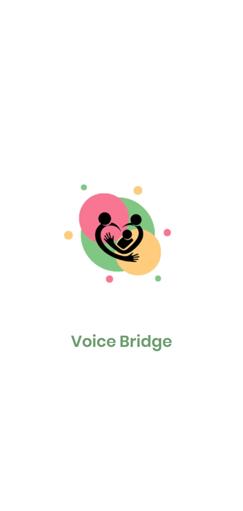
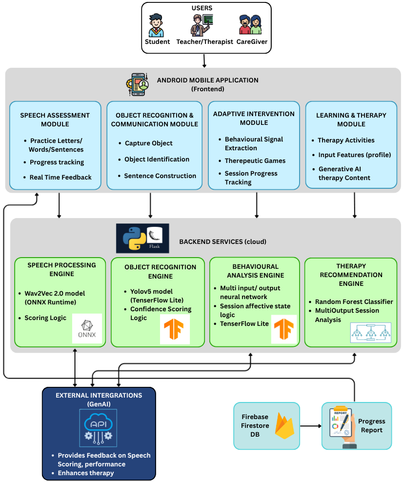
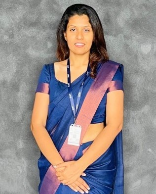

Technologies
Technologies Used

🤗
Hugging Face
Voice Bridge bridges clinical therapy and home-based practice for children aged 6–10 with ASD, Down Syndrome, and Speech Sound Disorders — powered by Wav2Vec 2.0, YOLOv5, LSTM adaptive games, and Random Forest therapy recommendations on Android.
Learn More
Clinical and technical foundations underpinning the Voice Bridge platform.
Speech Sound Disorders affect up to 24.6% of early school-aged children. ASD affects 1 in 127 globally, creating significant barriers — with critical resource shortages in regions like Sri Lanka.
Wav2Vec 2.0 processes raw waveforms via multi-layer CNN. Levenshtein CER/WER and Gestalt Pattern Matching enable precise phonological error diagnosis beyond binary feedback.
YOLOv5 enables real-time mobile AAC. BERT-based models enable dynamic symbol-to-sentence mapping, enhancing symbolic communication for non-verbal ASD children.
Platforms show 20–35% engagement improvement with dynamic difficulty. LSTM networks capture session-level emotional trajectories. Random Forest handles multi-label therapy recommendations robustly.
No existing platform integrates real-time context-aware AI — deep bidirectional transformers, hybrid acoustic-linguistic engines, and YOLOv5 object recognition — into a single unified therapeutic ecosystem.
Conventional PECS systems rely on static symbol libraries. Standard speech-to-text tools offer only binary feedback without structural error categorisation or multi-disorder support on a single mobile device.
An automated, multi-modal solution combining AI-driven speech coaching, context-aware AAC, memory-driven simulations, and personalised therapy recommendations — all on a single Android platform.
Clinically validated by certified speech-language pathologists, addressing SSD, ASD, and Down Syndrome across four functional AI layers on standard Android hardware with limited connectivity.
Four specialised AI subsystems targeting distinct therapeutic and developmental domains.
Fine-tune Wav2Vec 2.0 XLSR on a custom paediatric dataset deployed via ONNX Runtime (8-bit quantised) for high-speed phonetic scoring using Levenshtein Edit Distance and Gestalt Pattern Matching.
Real-time object detection pipeline using custom YOLOv5 with multi-factor contextual relevance scoring (Si) incorporating confidence, area ratio, and positional saliency — with BERT sentence construction for non-verbal ASD children.
Memory-driven therapeutic games governed by a multi-input LSTM deep neural network with session-level asymmetric frustration accumulation using an alpha (α) index integrating accuracy, response latency, and developmental age scaling.
MultiOutput Random Forest classifier (n_estimators=200) for multi-label therapy activity recommendation from child profiles — forwarded to Gemini AI for structured home therapy content generation.
The Voice Bridge platform consists of four tightly integrated AI subsystems deployed on a single Android application, supported by a Python/Flask backend — designed for offline-first, low-connectivity operation.
Each subsystem shares a common child profile layer, enabling cross-module personalisation and data-driven therapy adaptation across sessions.
Wav2Vec 2.0 XLSR → ONNX Runtime (8-bit) → Three-tier scoring → Gemini TTS (<1.2s)
YOLOv5 TFLite (4.2MB, mAP 92.3%) → Si scoring → BERT generation → <300ms
Multi-input LSTM (5-round buffer) → α frustration index → 18.3ms inference
Random Forest (n=200) + TF-IDF/Cosine → Top-10 ~95% → Gemini content

High-Level System Architecture of Voice Bridge
A clinically validated, AI-driven platform enabling children with speech and language disorders to receive structured therapeutic support anywhere, anytime.
Key assessments and research checkpoints throughout the project lifecycle.
Initial research proposal presenting the literature survey on ASR, AAC, adaptive AI, and ML recommendations; research gap identification; and proposed four-component system architecture.
First review covering individual component architecture, early prototypes for all four subsystems, and initial dataset collection for Wav2Vec 2.0 fine-tuning and YOLOv5 model training.
90%+ system completion — Wav2Vec (94.72%), YOLOv5 AAC (92.3%), adaptive games (18.3ms), and therapy recommender (~95% Top-10) all integrated and experimentally validated with preliminary user testing.
Complete system evaluation — clinical usability testing at selected speech therapy clinics, SLP validation by certified pathologists, and comprehensive research presentation to a panel of academic examiners.
Individual oral defense before a panel of academic examiners — demonstrating deep understanding of methodology, results, clinical implications, individual contributions, and future research directions.
Please find all documents related to this project below.
Please find all presentations related to this project below.
Research problem, gap identification, and proposed four-component AI solution overview.
View SlidesComponent architecture, early prototypes and initial dataset preparation across all four subsystems.
View Slides90%+ platform — all four AI components integrated with validated performance metrics.
View Slides90%+ platform — all four AI components integrated with validated performance metrics.
View SlidesComplete system showcase with clinical validation, usability results and future roadmap.
PendingDepartment of Computer Science and Software Engineering · SLIIT, Malabe, Sri Lanka
Computer Systems Engineering · SLIIT
samantha.t@sliit.lk
Computer Science & Software Engineering · SLIIT
poojani.g@sliit.lkSpeech and Language Pathologist · Clinical Specialist
Clinical Validation PartnerInterested in Voice Bridge, research collaboration, or clinical validation? We'd love to hear from you.
Sri Lanka Institute of Information Technology (SLIIT)
Faculty of Computing, New Kandy Road, Malabe,
Sri Lanka
it22354242@my.sliit.lk — Chirathi Somadasa
it22927248@my.sliit.lk — Piumi Balasooriya
it22309624@my.sliit.lk — Thamindu Dilhara